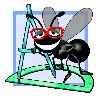

Good Programming Practices call attention to techniques that will help you produce programs that are clearer, more understandable and more maintainable.

Error-Prevention Tips contain suggestions for exposing bugs and removing them from your programs; many describe aspects of programming that prevent bugs from getting into programs in the first place.

Common Programming Errors point out the errors that students tend to make frequently. These Common Programming Errors reduce the likelihood that you'll make the same mistakes.

Software Engineering Observations highlight architectural and design issues that affect the construction of software systems, especially large-scale systems.